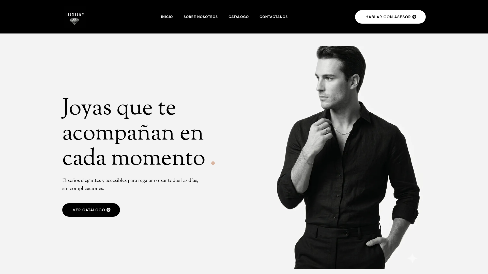
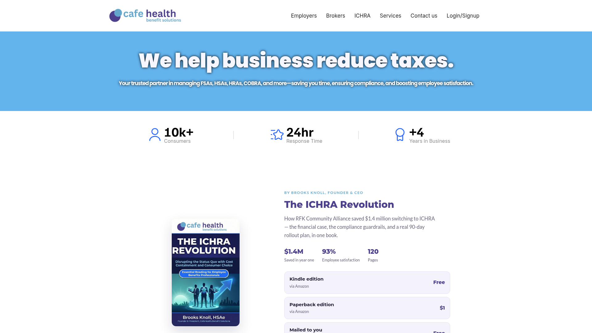
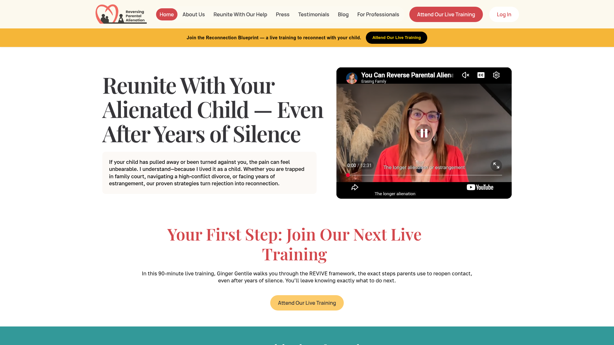
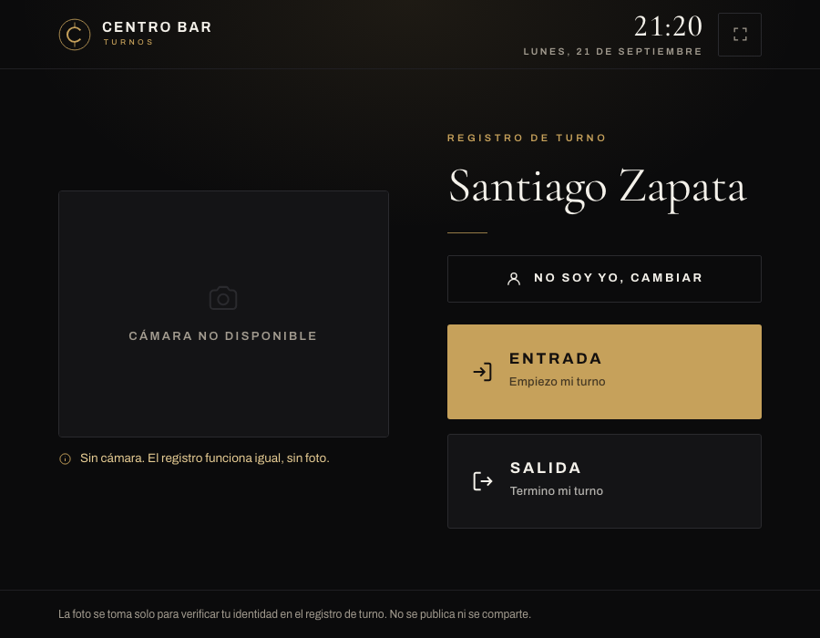

Automatización para negocios que quieren vender sin estar pendientes de todo el día. Esto es lo que ya he construido — para que vean exactamente qué están comprando antes de decidir.
Para NovaStore (Andrés Giraldo), dropshipping. Cada uno se hizo para un producto distinto, probando gancho, ritmo y edición hasta encontrar el que funcionara — la misma lógica que le aplico a cualquier negocio: no es "un video", es iterar hasta que venda.
Cuatro ejemplos elegidos porque cubren lo que la mayoría de negocios necesita: catálogo y venta online, un negocio corriendo casi solo, un embudo que demostradamente vende, y un sistema de registro con cámara y datos en tiempo real.

Página de catálogo con asesor de ventas integrado, embudo de ventas y chatbot para ventas digitales — pensada para que el cliente compre sin salir del sitio: mostrar el producto y vender, en un solo lugar. El negocio ya cerró operaciones, pero el sistema quedó en pie tal como se construyó.
Ver la página
Empresa americana de beneficios laborales (COBRA, FSA, HSA, HRA). Toda la operación corre sobre sistemas que diseñé y sostengo — desde la captación hasta la administración de clientes. Es la prueba de que no solo armo piezas sueltas: puedo sostener un negocio completo.
Ver la página
Se montó el embudo de ventas completo (con la metodología de Luis Hinestroza) y los sistemas generales del negocio. Yo ayudo a crear el contenido de los anuncios; la pauta y su optimización las lleva un equipo aparte. Con esa combinación, el embudo sostuvo ventas reales mes a mes.
$30,000–$50,000 USD/mes en ventas
Un kiosko con cámara donde cada empleado marca entrada y salida con verificación por foto. Cada registro cae directo a una base de datos que muestra ingresos y cuánto se está gastando en horas extra — sin planillas, sin que nadie tenga que digitar nada.
Ver centrobar.coNo es una promesa en un PDF — así se ve alguien escribiendo por WhatsApp y el asistente respondiendo, tomando el pedido y dejándolo listo para facturar.
Todo lo que pasa después de que llega el mensaje: dónde vive la información y cómo se organiza sola.
Todo lo de arriba se construye sobre GoHighLevel, configurado a fondo para que cada negocio venda y se organice solo, sin que nadie tenga que estar pendiente todo el día.
Si quieren ver algo puntual con más detalle, con gusto lo muestro en una llamada.